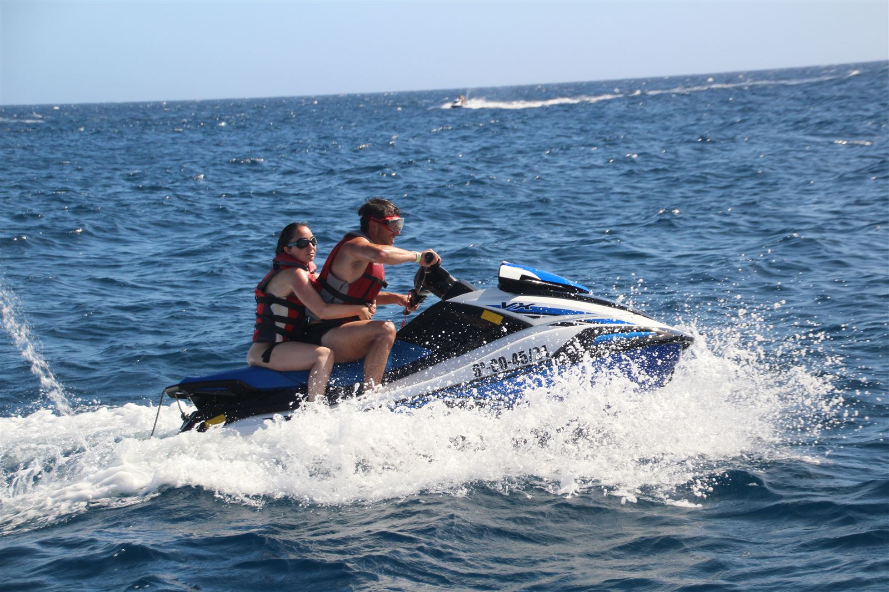
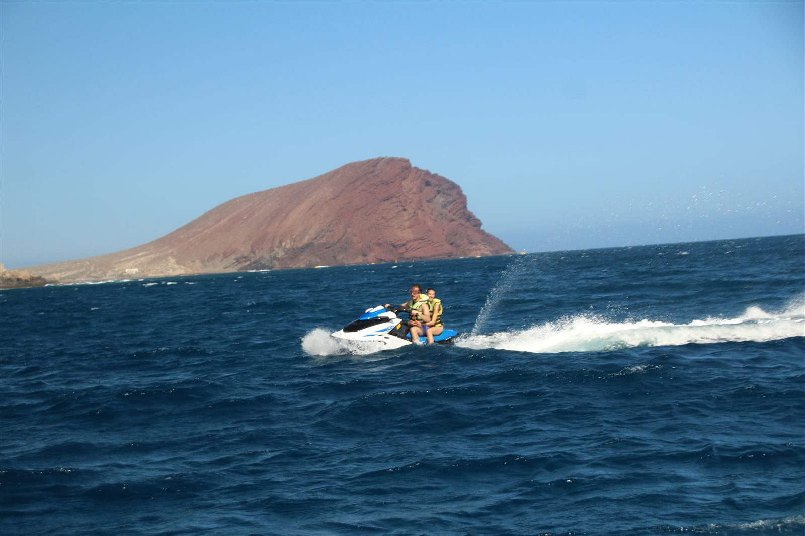
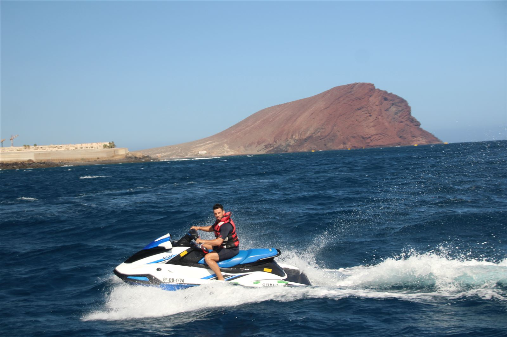
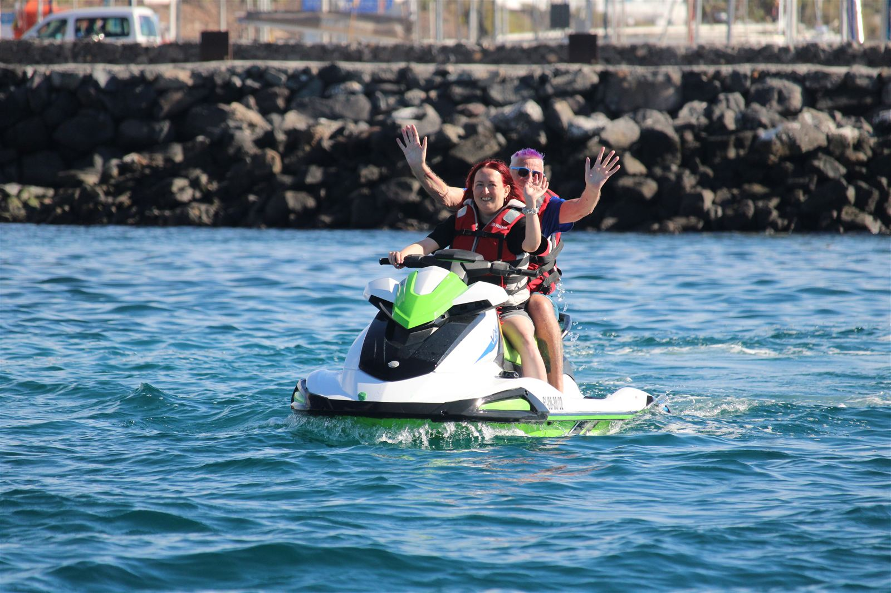
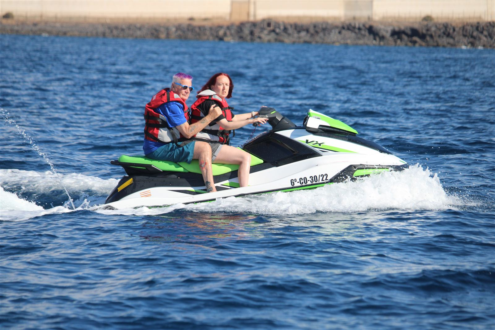
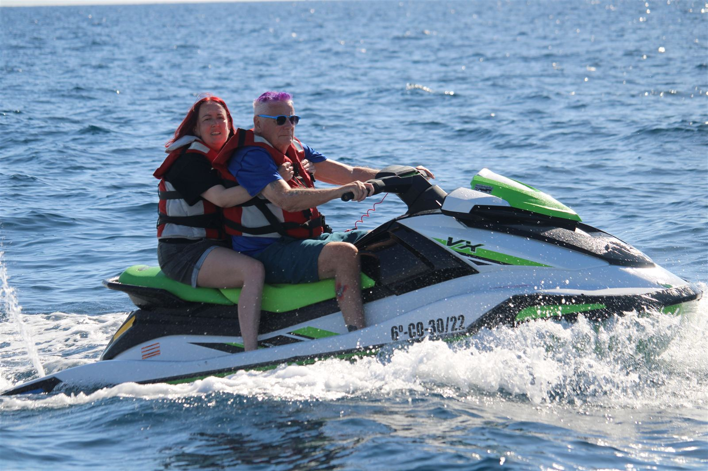
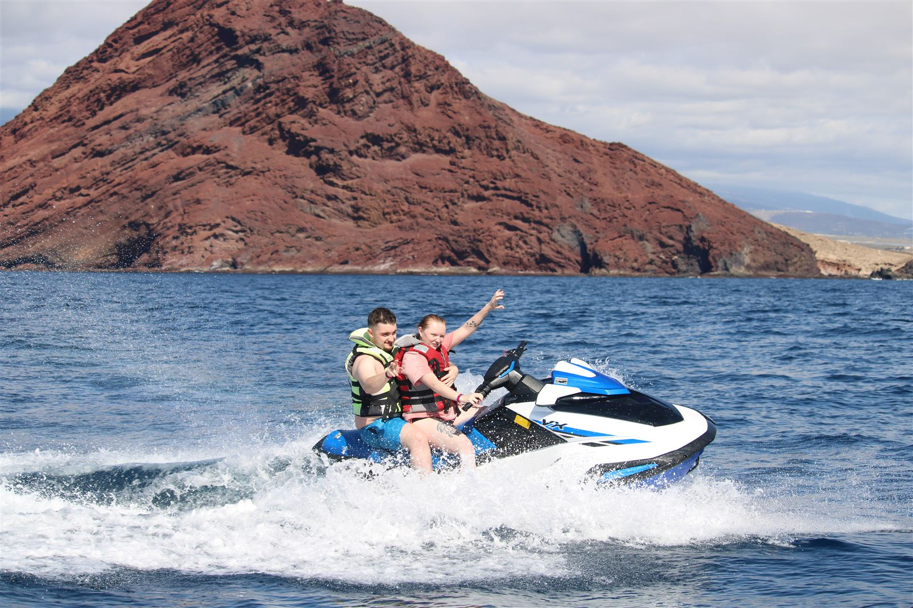
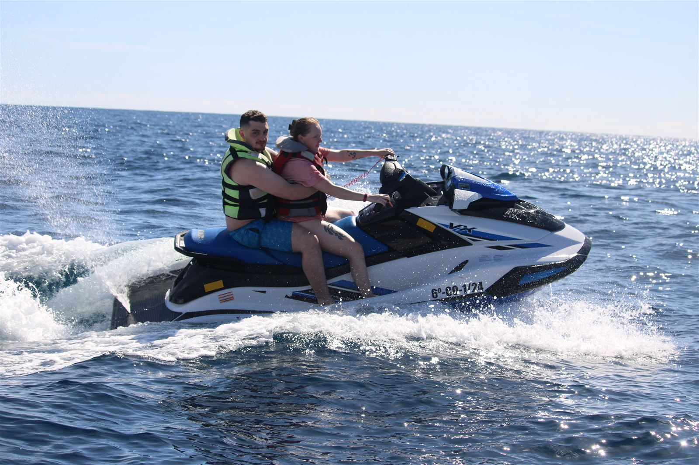
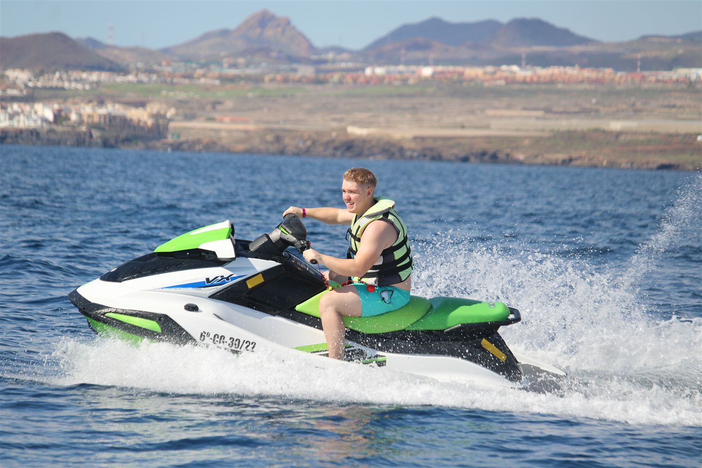
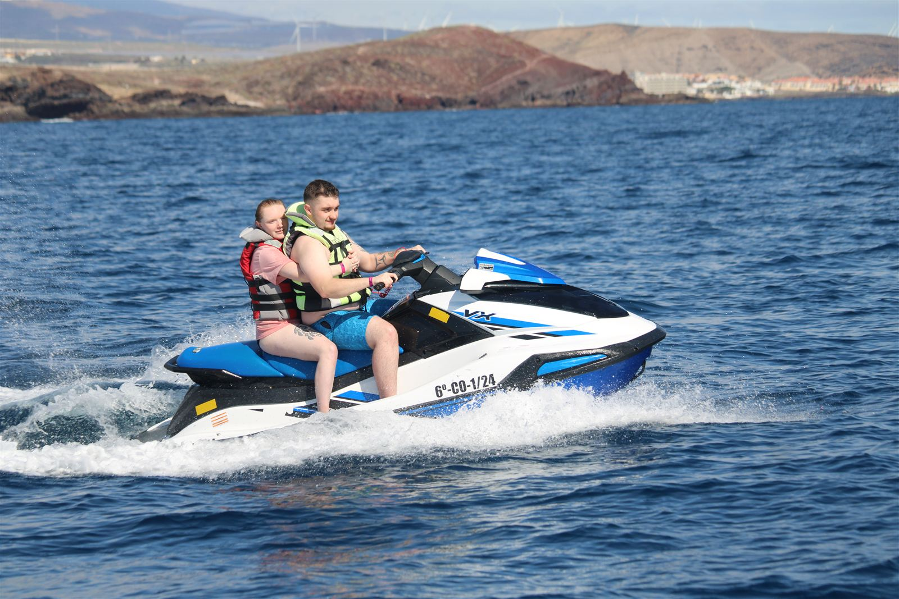
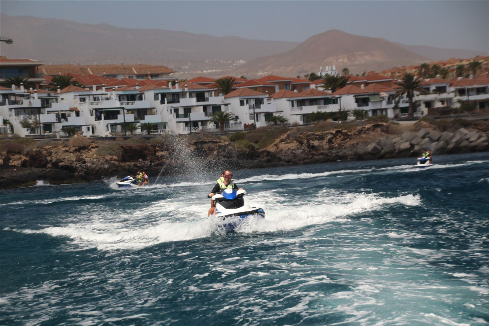
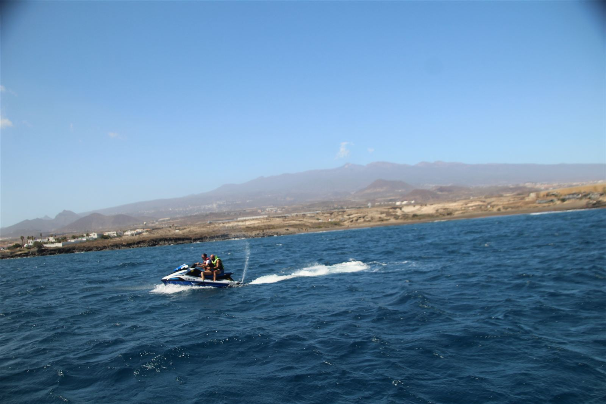
Vivi l'adrenalina dell'oceano Atlantico a tutta velocità con un'esperienza in Jet Ski pensata per chi vuole sentire il mare da una prospettiva totalmente diversa. Accelerazione, libertà e viste spettacolari sulla costa di Tenerife Sud, in un'attività intensa, divertente e sicura.
Ideale sia per principianti che per chi ha già provato gli sport acquatici. Partenza dal porto sportivo e percorso lungo la costa, tra scogliere, spiagge vulcaniche e acque aperte.
Jet Ski individuale o condiviso, briefing iniziale, accompagnamento professionale e percorsi dinamici sul mare aperto.
Giubbotto salvagente, istruzioni di sicurezza, supervisione durante tutta l'attività e Jet Ski moderno e revisionato.
Al termine puoi acquistare foto e video professionali catturati durante l'attività.
Coppie, amici, gruppi, addii e viaggiatori attivi che vogliono un tocco di adrenalina alla vacanza.
Quando vuoi partire e quanti siete? Ti rispondo con orari e disponibilità.
💬 Contattaci su WhatsApp